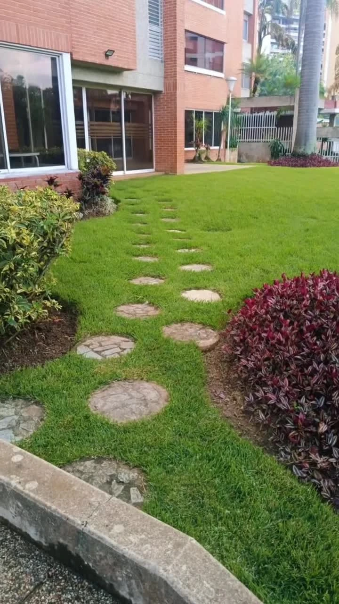

Grama natural
Venta e instalación de grama lista por paneles. Trabajamos con Esmeralda, San Agustín y Japonesa.
GRAMA NATURAL & JARDINERÍA · CARACAS
Un espacio verde empieza con una buena idea.
Te ayudamos a sembrarla, cuidarla y verla crecer.
Grama natural, plantas ornamentales
y el cuidado que tu jardín necesita.

LO QUE PODEMOS HACER POR TI
¿Vas a empezar de cero o quieres recuperar tu espacio? Encuentra el servicio que necesitas y cuéntanos tu idea.
Venta e instalación de grama lista por paneles. Trabajamos con Esmeralda, San Agustín y Japonesa.
Venta y siembra de plantas para darle color y personalidad a tu jardín. Consulta el catálogo disponible.
Limpieza, desmalezado, preparación del suelo y retirada del jardín existente, según lo que necesite tu espacio.
Corte de grama, poda, limpieza, fertilización y tratamiento de malezas para el cuidado de tus áreas verdes.
TRES OPCIONES, UN JARDÍN CON VIDA
La elección depende de tu espacio y del uso que le das. Cuéntanos cómo es tu terreno y te orientamos.
EL TRABAJO HABLA POR NOSOTROS
Siembra, recuperación y cuidado de espacios verdes. Imágenes de los trabajos compartidos por Grama AJS.
Más trabajos en InstagramUN SERVICIO PARA CADA ETAPA
En nuestro Instagram compartimos el proceso: desde preparar el terreno hasta sembrar y mantener sus áreas verdes. Aquí puedes conocer mejor cada trabajo.
PREPARAR PARA EMPEZAR
Antes de sembrar, revisamos qué necesita el espacio. La preparación del suelo forma parte de nuestros servicios, al igual que la limpieza y el desmalezado.
VENTA Y SIEMBRA
Trabajamos con grama lista por paneles y realizamos su instalación. Puedes consultar por Esmeralda, San Agustín o Japonesa, las variedades que mostramos en el perfil.
DARLE PERSONALIDAD
Además de la grama, ofrecemos venta y siembra de plantas ornamentales. En el perfil puedes ver composiciones y espacios en los que las plantas son parte del trabajo.
SEGUIR CUIDÁNDOLO
También puedes contar con nosotros para los trabajos de mantenimiento que compartimos en Instagram: corte de grama, poda, limpieza, fertilización y tratamiento de malezas.
El alcance se acuerda según las condiciones de tu espacio.
PARA QUE PODAMOS AYUDARTE MEJOR
No necesitas tener todo decidido para conversar. Si aún no sabes por dónde empezar, elige «Necesito orientación» en el botón de WhatsApp.
Envía fotos o un vídeo del espacio y de la parte que te gustaría renovar.
Cuéntanos qué quieres conseguir. Si tienes medidas aproximadas, compártelas.
Indica en qué sector estás para confirmar cobertura y coordinar los detalles del trabajo.
EMPECEMOS POR TU IDEA
Elige un servicio y comparte tu idea, tu zona y unas fotos del espacio por WhatsApp.
Conversamos sobre el terreno y coordinamos una visita si el trabajo lo requiere.
Definimos el alcance y el presupuesto antes de empezar.
CERCA DE TI Y DE TU JARDÍN
Detrás de Grama AJS hay alguien con quien puedes hablar de tu proyecto.
Nos dedicamos a la venta y siembra de grama natural y plantas ornamentales, la preparación de suelos y los trabajos de jardinería y mantenimiento.
¿Quieres renovar tu jardín o necesitas ayuda para cuidarlo? Cuéntame qué tienes en mente y revisamos juntos lo que necesita tu espacio.
ANTES DE EMPEZAR
Lo que conviene saber
sobre tu próximo jardín.
Trabajamos con grama natural Esmeralda, San Agustín y Japonesa, lista por paneles. Por WhatsApp podemos orientarte según tu espacio y confirmar disponibilidad.
Sí. Realizamos limpieza, desmalezado y preparación del suelo. El trabajo necesario se define según el estado del terreno.
Sí. Ofrecemos corte de grama, poda, limpieza de jardines, fertilización y tratamiento de malezas. Cuéntanos qué necesita tu jardín para revisar el alcance.
Pulsa el botón de WhatsApp, elige el servicio e indica lo que necesitas. Si tienes medidas aproximadas, tu zona y fotos, compártelas en la conversación. El presupuesto se confirma según el trabajo.
Compartimos trabajos en Caracas. Indícanos tu ubicación por WhatsApp para confirmar la cobertura y coordinar una visita cuando haga falta.
Sí. La venta y siembra de plantas ornamentales forman parte de nuestros servicios. Consúltanos qué plantas te interesan y confirmamos disponibilidad.
Sí. Puedes elegir «Poda» o «Preparación y limpieza del terreno» en el selector de WhatsApp y contarnos qué necesitas.
Una vista general y algunas fotos de las zonas que quieres trabajar nos ayudan a entender tu idea. Añade tu sector y las medidas aproximadas si las tienes.
Elige «Necesito orientación», describe cómo está el espacio y qué te gustaría cambiar. Desde ahí podemos comenzar la conversación.
DA EL PRIMER PASO
Cuéntanos qué necesitas. Nosotros te ayudamos a empezar.
+58 426 511 1415